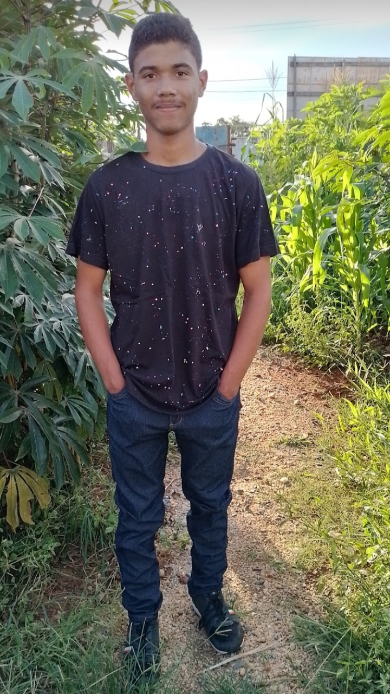
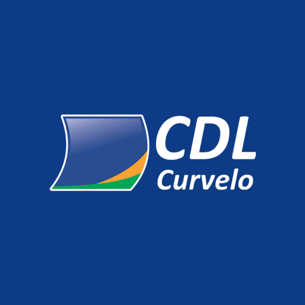
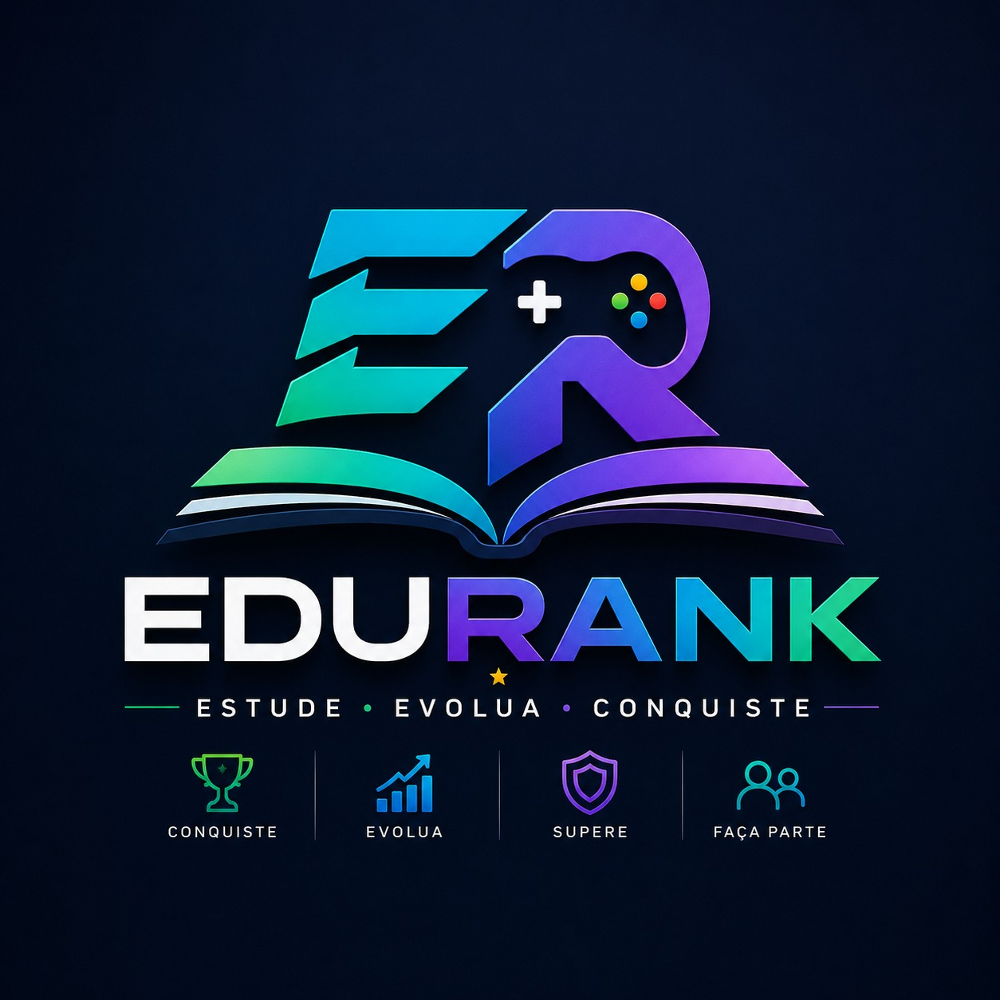
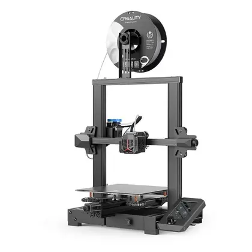

HTML5
Estrutura semântica, organização do conteúdo e acessibilidade.
Neste portfólioESTUDANTE DE DESENVOLVIMENTO DE SISTEMAS
Olá, eu sou Daniel
Sou estudante do ensino médio em tempo integral e do curso Técnico em Desenvolvimento de Sistemas. Idealizador do EduRank, conecto tecnologia, educação e soluções práticas em projetos com propósito.
01 SOBRE MIM
Minha trajetória reúne tecnologia, formação para o mercado e vontade de continuar aprendendo.

Sou Daniel, tenho 17 anos e há cerca de três anos estudo tecnologia e desenvolvimento de sistemas. Concilio o ensino médio em tempo integral com o curso Técnico em Desenvolvimento de Sistemas. Sou o idealizador do EduRank, uma plataforma educacional gamificada em desenvolvimento.
Minha formação também passa pela área de negócios, com cursos que realizei na Vallourec, por meio da CDL Curvelo.
Ao longo de um ano, estudei uma disciplina diferente a cada dois meses, combinando aulas e atividades práticas. Essa experiência ampliou minha visão sobre atendimento, organização e negócios, além de reforçar a importância de colocar o conhecimento em prática.
Participo da Liga STEAM e trabalhei com a Creality Ender-3 V2 na produção de medalhas para o interclasse da escola. Essa prática envolveu preparação de arquivos G-code, testes de impressão e resolução de problemas de qualidade.
Também estudo música e viola de arco. A prática musical faz parte da minha trajetória e fortalece a disciplina, a constância e a atenção aos detalhes que levo para meus projetos.

Cursos que fazem parte da minha trajetória
CDL Curvelo
02 TECNOLOGIAS
Desenvolvimento web
e fabricação digital.
Estrutura semântica, organização do conteúdo e acessibilidade.
Neste portfólioLayouts responsivos, identidade visual e adaptação a diferentes telas.
Neste portfólioNavegação, eventos e interações com a página.
Neste portfólioEstudo de interfaces em componentes e organização de código com tipagem.
Em estudo · base do EduRankEstilização por classes utilitárias e consistência da interface.
Em estudo · base do EduRankFerramentas para desenvolvimento e preparação da aplicação web.
Em estudo · base do EduRankPreparação de arquivos, ajustes, testes de impressão e diagnóstico de falhas de aderência e acabamento.
Na prática · medalhas do interclasse03 FORMAÇÃO E EXPERIÊNCIAS
Teoria, prática e experiências que fazem parte da minha trajetória.
Ensino médio em tempo integral e formação técnica, conectando fundamentos de programação à criação de projetos digitais.
CDL Curvelo · Cursos realizados na Vallourec
Cursos de Gerente de Caixa, Marketing Pessoal e Profissional, Gerente de Vendas, Empreendedorismo e Investimentos. Durante um ano, uma disciplina diferente foi estudada a cada dois meses, com aplicação dos conteúdos em atividades práticas.
Participação na Liga STEAM como parte da minha trajetória de aprendizado e desenvolvimento profissional.
Produção de medalhas para o interclasse da escola, com preparação de arquivos G-code, configurações de impressão, testes e avaliação da qualidade das peças.
04 PROJETOS
Da ideia ao produto.
Conheça o que estou construindo.

Estude. Evolua. Conquiste.
Plataforma educacional gamificada em desenvolvimento que propõe reconhecer participação, frequência e evolução escolar. A proposta reúne ferramentas para estudantes, professores, secretaria e gestores, conectando acompanhamento pedagógico e desafios colaborativos.
Meu papel Concepção da solução, levantamento de requisitos, planejamento das funcionalidades e prototipação.
Em desenvolvimento · Demonstração pública ainda não disponível.
A rotina escolar nem sempre torna visível o esforço de cada estudante. O EduRank parte desse desafio: reconhecer participação, cooperação e evolução pessoal, além das notas.
Reunir acompanhamento escolar e uma jornada de progressão com XP, patentes, conquistas e desafios em grupo. O objetivo é incentivar o envolvimento dos alunos e apoiar o trabalho dos educadores.
Os módulos abaixo fazem parte da proposta e dependem de implementação, testes e validação.
Consulta de notas e frequência, jornada de progresso, conquistas, rankings e desafios colaborativos em guildas e duplas.
Organização de turmas, atividades, avaliações e presença, com um Diário Escolar Digital proposto dentro do EduRank.
Gestão de cadastros, históricos, notas e justificativas de faltas, respeitando as permissões de cada função.
Painéis e relatórios para acompanhar frequência, participação e necessidades de apoio pedagógico.
React, TypeScript, Vite e Tailwind CSS são tecnologias associadas à base do EduRank e ao meu aprendizado. TanStack, Supabase JS e PostgreSQL aparecem no planejamento técnico; as integrações ainda dependem de implementação e validação.
Revisar a implementação, validar permissões e fluxos críticos, testar acessibilidade e preparar uma demonstração com dados fictícios. Minijogos educacionais, personalização de avatares e acesso offline fazem parte das possibilidades de evolução.

Ampliar imagemCreality Ender-3 V2
Impressão FDM · Filamento PLA
Imagem de referência do equipamento.
Da preparação do arquivo à avaliação da peça.
Participei da produção de medalhas para o interclasse da escola com a impressora Creality Ender-3 V2. A atividade aproximou planejamento, fabricação digital e resolução de problemas concretos.
Meu papel Preparação e uso de arquivos G-code, ajustes de configuração, testes de impressão, análise de falhas e avaliação da qualidade.
Produzir medalhas para o interclasse escolar, aplicando fabricação digital em uma atividade da escola.
Preparar arquivos G-code, ajustar as configurações da impressora, realizar testes e acompanhar a qualidade das peças em PLA.
Identificar problemas de aderência e acabamento, analisar os resultados e fazer ajustes para melhorar as impressões.
Resolver problemas por meio de observação, testes e comparação de resultados. A experiência reforçou a importância da preparação e da atenção aos detalhes.
Proposta de painel para organizar a chamada das turmas no horário do almoço, com ordem de atendimento e informações visuais claras.
Ideia em estudo · Sem implantação.
Proposta de comunicação por telas para orientar a saída das salas, coordenar horários e tornar os avisos mais claros nos momentos de circulação.
Ideia em estudo · Sem implantação.
Exemplos visuais de organização de tarefas, gestão de biblioteca e apresentação de um estúdio. São conceitos ilustrativos de interface.
Um organizador de tarefas para deixar os estudos e as entregas do dia a dia em ordem.
Proposta: cadastrar tarefas, marcar conclusões e filtrar por situação.
Aprendizado sugerido: manipulação do DOM, eventos e armazenamento local.
Conceito ilustrativo de interface, sem demonstração pública.
Uma proposta de sistema para organizar o acervo e os empréstimos de uma biblioteca escolar.
Proposta: cadastrar livros e leitores e consultar empréstimos.
Aprendizado sugerido: modelagem de dados, consultas SQL e regras de negócio.
Conceito ilustrativo. Os números da prévia são fictícios; não representam um sistema implantado.
Uma página de apresentação para um estúdio criativo, pensada para diferentes tamanhos de tela.
Proposta: apresentar serviços, trabalhos e canais de contato.
Aprendizado sugerido: hierarquia visual, CSS Grid e adaptação para dispositivos móveis.
Conceito ilustrativo de uma marca fictícia.
05 CONTATO
Para conversar sobre projetos, oportunidades de aprendizagem, estágio ou desenvolvimento de sistemas, entre em contato.
Curvelo, Minas Gerais · Brasil